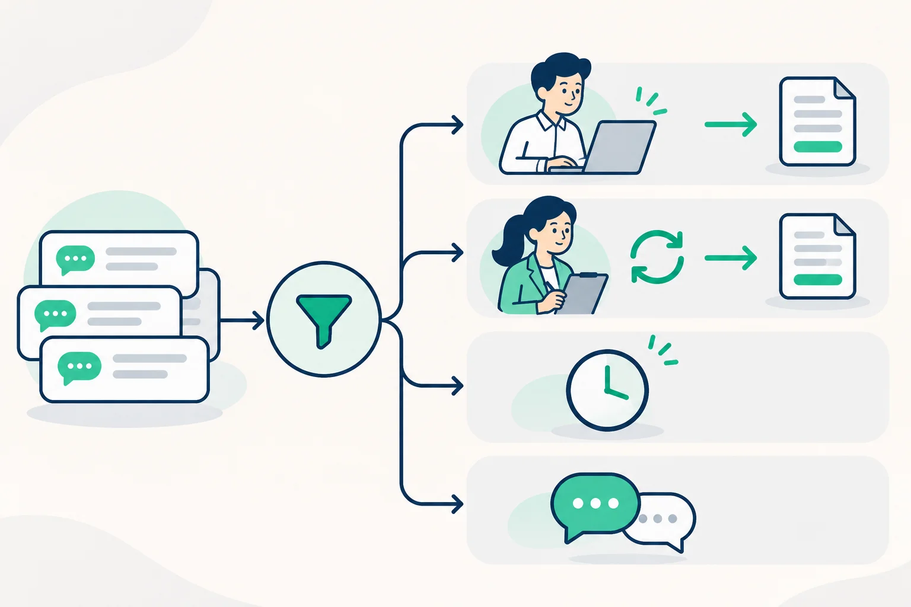

Article · 飞函
Article · 飞函
财务月结：如何分清待办审批与群内讨论
月结临近截止时，财务群里可能接连出现“这笔费用能否入账”“请补充合同附件”“报销单已提交”三类消息。它们看起来都与审批有关，但只有明确要求某个人采取行动的消息，才应进入待处理清单。若把每条讨论都当成待办，负责人会被噪声淹没；若把补件请求当成普通聊天，结账进度就可能卡在无人承接的一步。
先看消息是否构成一个动作
判断时可以连续问四个问题：谁来做、做什么、针对哪笔业务、何时需要完成？ “请王会计今天核对采购单 A 的税额，并在原审批单中反馈”具备这些要素；“这类费用通常怎么处理”仍是讨论。对于“麻烦看一下”这样的模糊说法，接收者应先问清业务单据和预期动作，再将其列为待办。
月结群里的信息可按处理状态分开：需要我执行或审批的，列入个人待处理清单；需要别人处理而我负责跟进的，记录责任人与约定时间；尚缺材料或结论的，标明等待谁回复；仅供交流的信息，留在讨论中。分类依据是业务责任，而不是消息是否醒目、发送者是否着急。

让聊天负责提醒，让业务记录承接结果
团队可以约定一条清晰的行动消息格式：业务单据或事项、所需动作、责任人、截止时间、结果回填位置。例如：“采购单 A｜补传合同附件｜业务经办人｜今日 16:00 前｜上传至原审批单。”发起人随后在原审批流程中核对材料和处理状态。群里回复“收到”只能说明消息被看见，不能代替审批通过、附件补齐或账务确认。
飞函即时通讯可作为月结沟通入口。团队可利用聊天分组区分月结协同与日常交流，借助搜索回找单据相关讨论，并用重要消息突出需要关注的通知。消息工具帮助人找到线索；最终是否办结，仍应以原业务系统中的记录为准。
每天固定一次短检查也很有效：财务负责人只核对未完成事项的责任人、截止时间和业务记录，不逐条重读群聊。月底再回看反复出现的模糊请求，把“请处理”改写成明确动作。这样，讨论可以继续快速发生，真正需要推进的审批也有清楚的承接人和完成依据。